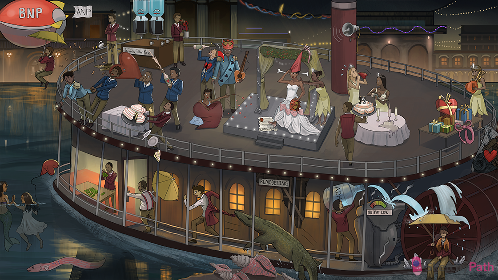

Failing heart balloon: congestive heart failure
Systolic spray: systolic heart failure (ejection dysfunction)
Falling cake fraction: heart failure with reduced ejection fraction (systolic heart failure)
40 shaped cake server: ejection fraction <40% (reduced ejection fraction)
Ultrasound horn: use cardiac ultrasound to measure ejection fraction
Weak arm lifting heart: reduced cardiac contractility → reduced ejection fraction (systolic heart failure)
High pressure balloon: increased end diastolic PRESSURE (seen in systolic heart failure)
High volume balloon: increased end diastolic VOLUME (seen in systolic heart failure)
Difficulty filling glasses: diastolic heart failure (filling dysfunction)
Diamond tiara: diastolic heart failure
Lifting cake fraction: heart failure with preserved ejection fraction (diastolic heart failure)
55 cake topper: ejection fraction >55% (preserved ejection fraction)
Fallen compliance papers: reduced ventricular compliance seen in diastolic heart failure
High pressure balloon: increased end diastolic PRESSURE with normal diastolic volumes (seen in diastolic heart failure)
Clogged coronary crown: coronary artery disease (CAD) can cause cardiac ischemia → decreased contractility → systolic heart failure
Broken heart string: acute coronary syndrome (ACS - e.g. acute myocardial infarction) can cause myocardial scarring → decreased contractility → systolic heart failure
Dilated heart sac: dilated cardiomyopathy causes decreased contractility → systolic heart failure
Regurgitating drink: valvular insufficiency (e.g. aortic or mitral regurg) can cause volume overload → systolic heart failure
Unbuttoned shirt: left to right shunt (e.g. ventricular septal defect) can cause volume overload → systolic heart failure
High pressure steam: long standing hypertension can cause pressure overload → left ventricular hypertrophy → diastolic heart failure (most common cause)
Stenotic aortic hat: aortic stenosis can cause pressure overload → ventricular hypertrophy → diastolic heart failure
Heart in restrictive net: restrictive cardiomyopathy causes a non-compliant ventricle → diastolic heart failure
Clogged coronary crown: coronary artery disease (CAD) can cause cardiac ischemia → noncompliant ventricle → diastolic heart failure
Constricting bow: constrictive pericarditis causes a non-compliant ventricle → diastolic heart failure
Pulling load: systolic heart failure is associated with increased PRELOAD (volume-overload states)
Long eccentric eel: eccentric hypertrophy (sarcomeres add in series) in response to volume-overload states → systolic heart failure
Dilated cave: systolic heart failure is associated with increased chamber size (due to eccentric hypertrophy)
Pushing load: chronic hypertension and valvular stenosis cause diastolic heart failure by increasing afterload
Concentric conch shell: concentric hypertrophy (sarcomeres add in parallel) in response to increased afterload (e.g. HTN, stenotic valves) → diastolic heart failure
Small shell opening: diastolic heart failure with concentric hypertrophy is associated with decreased chamber size and increased wall thickness
Bulging septum: HOCM causes diastolic heart failure with isolated septal hypertrophy
Normal cardiac bow: restrictive cardiomyopathy and constrictive pericarditis cause diastolic heart failure with normal chamber size and wall thickness
Dilated BNP blimp: brain natriuretic peptide (BNP) is released by stretched cardiomyocytes in the ventricles
ANP flag: atrial natriuretic peptide (ANP) is released by stretched cardiomyocytes in the atria
Dilated sleeves: ANP and BNP cause vasodilation → decreased afterload
Salty sodium peanuts in water: ANP and BNP promote natriuresis → diuresis → decreased preload
Falling rain umbrella: ANP and BNP decrease renin production → decreased aldosterone → natriuresis/diuresis
Pinched efferent straw: ANP and BNP cause efferent arteriolar vasoconstriction → increased GFR → natriuresis/diuresis
Increased grounds filtration rate: ANP and BNP increase glomerular filtration rate (GFR)
Compensation pay: compensatory mechanisms in heart failure (e.g. sympathetic activation, RAAS activation, remodeling)
“OUTPUT LOW”: heart failure is associated with decreased cardiac output → compensatory mechanisms
Fight or flight activation: decreased cardiac output causes increased sympathetic activation → increased heart rate and cardiac contractility
Twisted arterial sleeve: decreased cardiac output causes increased sympathetic activation → vasoconstriction (increase SVR)
Rain umbrella and tight red suspenders: decreased cardiac output causes increased renin activity → increased angiotensin II → vasoconstriction (increased SVR)
Pushing load: RAAS and sympathetic activation increased afterload (vasoconstriction)
Wet rain umbrella and salty minerals: decreased cardiac output causes increased renin activity → increased aldosterone → salt and water retention
Water refill: decreased cardiac output causes increased antidiuretic hormone (ADH) activity → increased free water retention
Wet life preserver and peripheral pants: compensatory mechanisms of heart failure (e.g. RAAS activation, ADH activation) exacerbate pulmonary and peripheral edema
“Remodeling”: long-term neurohormonal activation (RAAS, ADH, sympathetic) + increased hemodynamic stress (HR/contractility, vasoconstriction, extracellular volume) → deleterious cardiac remodeling
Cycling water wheel: decreased cardiac output → compensatory mechanisms of heart failure → cardiac remodeling → further decreased cardiac output → ...it’s a vicious cycle